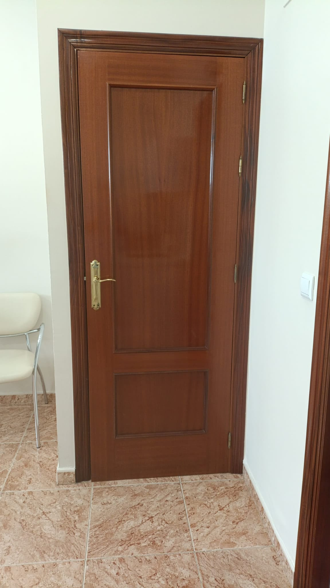
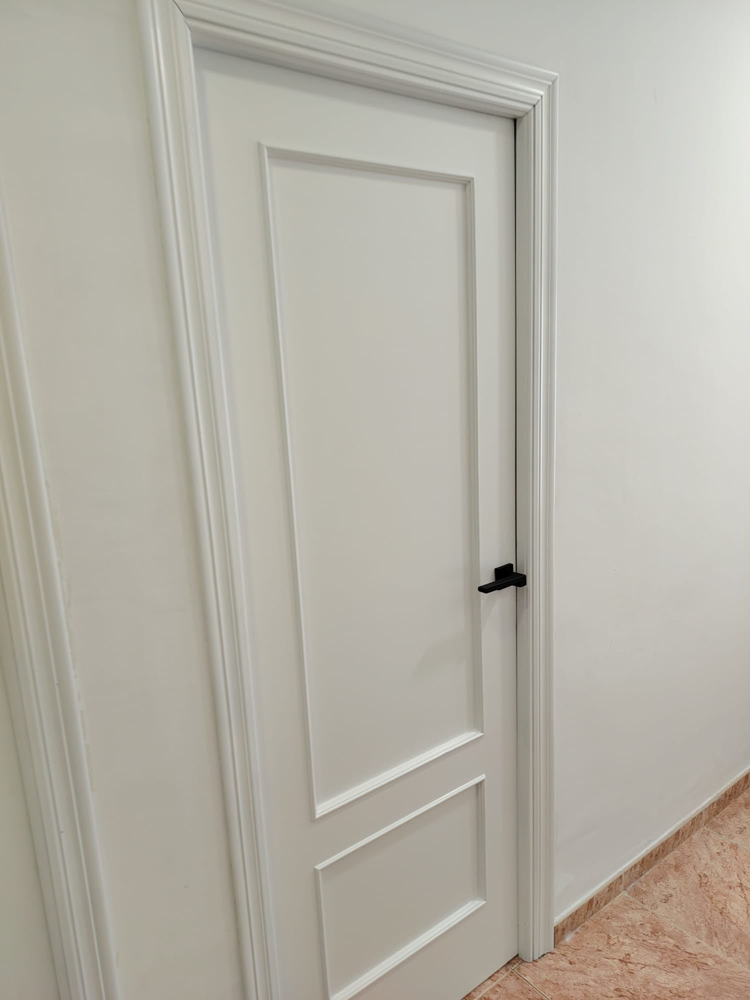
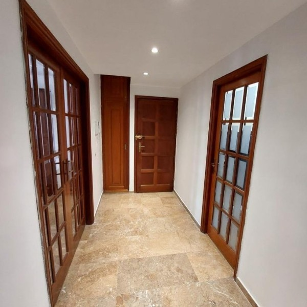
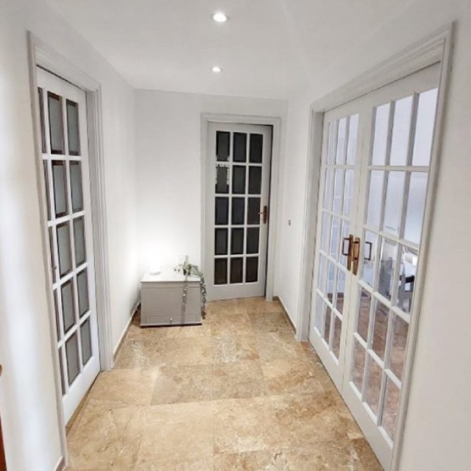
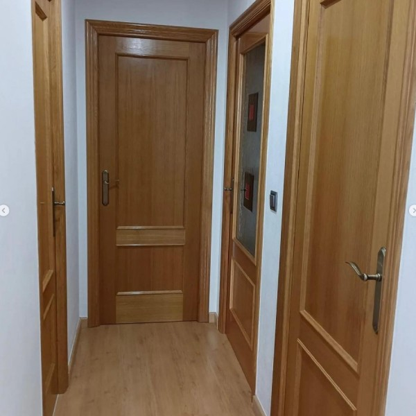
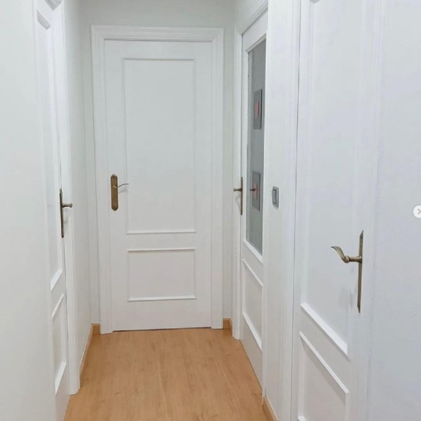
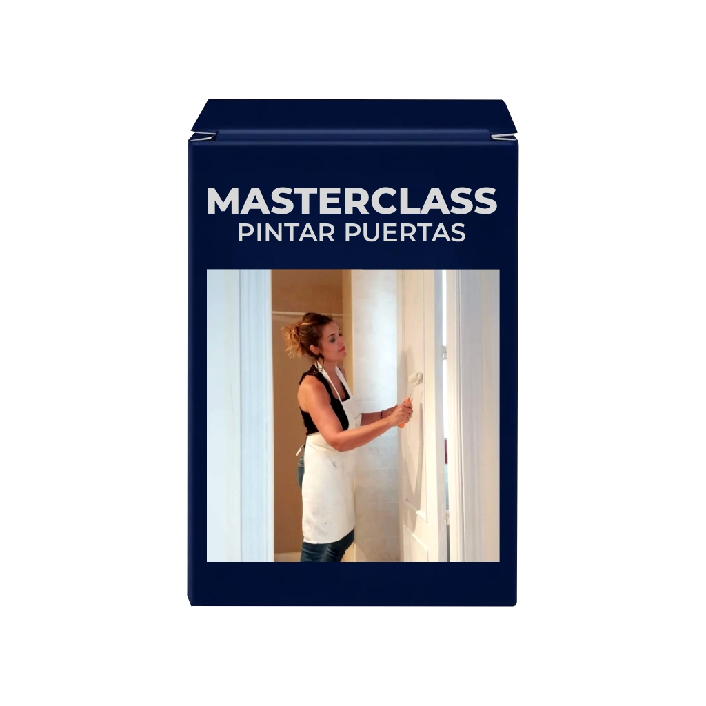

Antes
DespuésFoto real De Tiza. Color usado: [pendiente]
Elige cuántas puertas vas a pintar y el color. El pack ya lleva la pintura y el primer que necesitas, y tú decides qué herramientas añadir.
Desde 37,40 € (1 puerta)
Si dudas entre dos, elige el más grande para ir sobre seguro.
Cantidades: tabla del configurador actual de De Tiza. Rendimiento publicado en la web: 1 bote de Essential 750 ml cubre unos 10 m². Superficie de pintura por puerta: [pendiente]
Las 6 herramientas para pintar tus puertas. Opcionales: se añaden todas juntas.
¿Quieres elegirlas sueltas? Crea tu propio pack
Con Super Clean o con agua y amoniaco. Aclara con agua.
Con el rodillo blanco. Seca de 8 a 24 h.
Essential. Seca al menos 4 h (hasta 8 si hace frío).
Solo si quedan imperfecciones. Quita el polvo con un trapo húmedo.
Lista para usar en 2–3 días. Cura del todo a los 21.

Antes
Después
Antes
DespuésElige según el número total de puertas. Si dudas entre dos opciones, elige la más grande. Para otras combinaciones, usa el configurador avanzado.
Sí. En la web aparece como «¡Imprescindible!» y es el primer paso antes de pintar.
En 2 o 3 días estará seca para usarla, pero la pintura no cura del todo hasta pasados 21 días.
Península, Ceuta, Melilla y Baleares: 48–72 h laborables. Canarias: 7 a 15 días laborables.
Puede variar según el dispositivo. Puedes pedir antes las muestras físicas. Las devoluciones se aceptan en 60 días, salvo colores personalizados.
